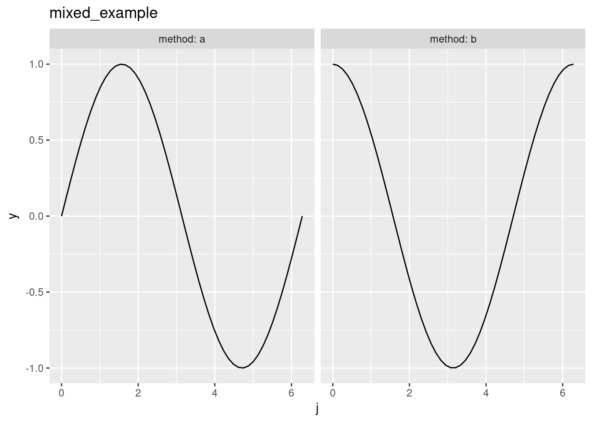
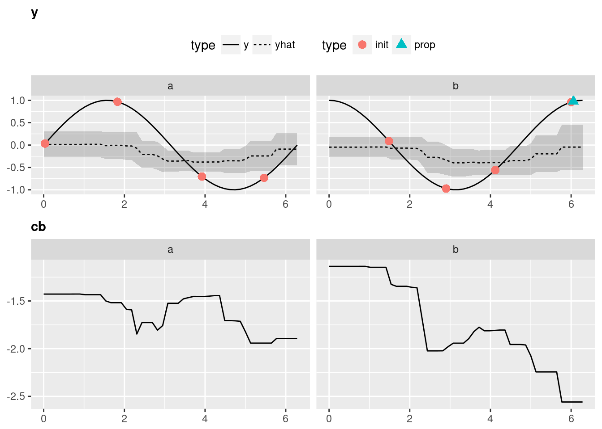
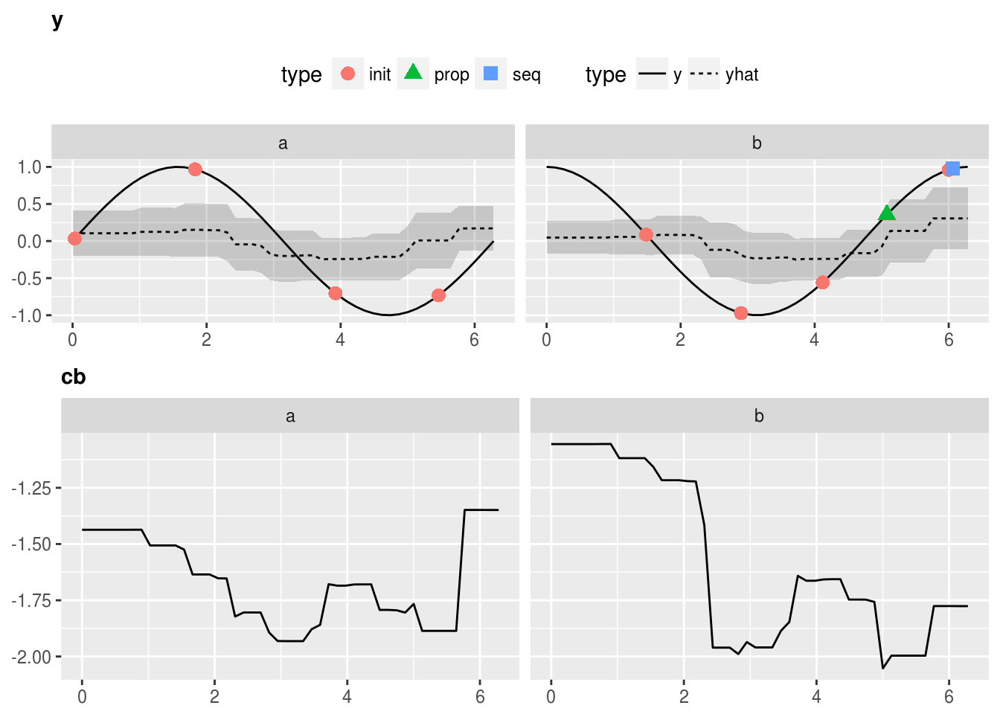
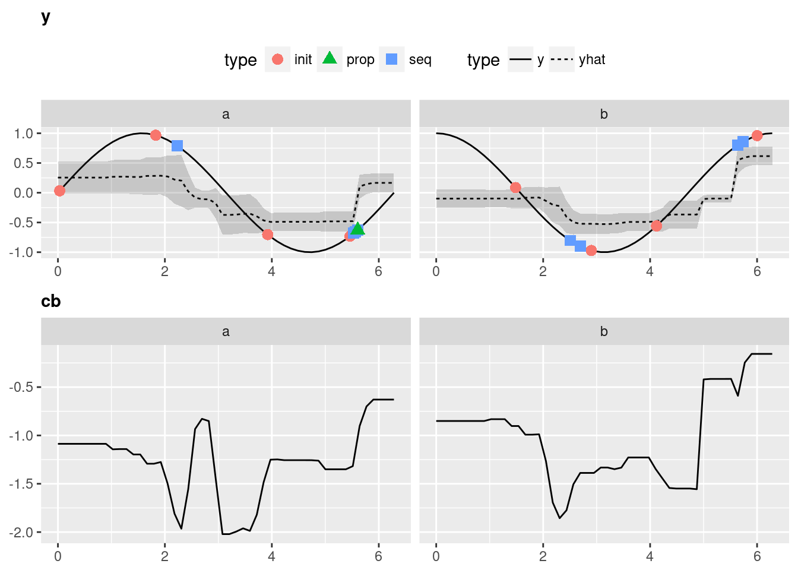

This Vignette is supposed to give you an introduction to use mlrMBO for mixed-space optimization, meaning to optimize an objective function with a domain that is not only real-valued but also contains discrete values like names.
We construct an exemplary objective function using smoof::makeSingleObjetiveFunction(). The par.set argument has to be a ParamSet object from the ParamHelpers package, which provides information about the parameters of the objective function and their constraints for optimization. The objective function will be 3-dimensional with the inputs j and method. j is in the interval \([0,2\pi]\) The Parameter method is categorical and can be either "a" or "b". In this case we want to minimize the function, so we have to set minimize = TRUE. As the parameters are of different types (e.g. numeric and categorical), the function expects a list instead of a vector as its argument, which is specified by has.simple.signature = FALSE. For further information about he smoof package we refer to the github page.
library(mlrMBO)
library(ggplot2)
fun = function(x) {
j = x$j
method = x$method
perf = ifelse(method == "a", sin(j), cos(j))
return(perf)
}
objfun2 = makeSingleObjectiveFunction(
name = "mixed_example",
fn = fun,
par.set = makeParamSet(
makeNumericParam("j", lower = 0,upper = 2 * pi),
makeDiscreteParam("method", values = c("a", "b"))
),
has.simple.signature = FALSE,
minimize = TRUE
)
# visualize the function
autoplot(objfun2)
For this kind of parameter space a regression method for the surrogate is necessary that supports factors. To list all mlr learners that support factors and uncertainty estimation you can run listLearners("regr", properties = c("factors", "se")). A popular choice for these scenarios is the Random Forest.
surr.rf = makeLearner("regr.randomForest", predict.type = "se")Although technically possible the Expected Imrovement that we used for the numerical parameter space and the Kriging surrogate, the Confidence Bound (makeMBOInfillCritCB()) or also called statistical upper/lower bound is recommended for Random Forest regression. The reason is, that the Expected Improvement is founded on the Gaussian posterior distribution given by the Kriging estimator, which is not given by the Random Forest regression. For minimization the lower Confidence Bound is given by \(UCB(x) = \hat{\mu}(x) - \lambda \cdot \hat{s}(x)\). We set \(\lambda = 5\). For the infill criteria optimization we set opt.focussearch.points = 500, to increase the speed of the tutorial.
control2 = makeMBOControl()
control2 = setMBOControlInfill(
control = control2,
crit = makeMBOInfillCritCB(cb.lambda = 5),
opt.focussearch.points = 500
)We want to stop after 10 MBO iterations, meaning 10 function evaluations in this example (not including the initial design):
control2 = setMBOControlTermination(
control = control2,
iters = 10
)The initial design is set to size of 8:
design2 = generateDesign(n = 8, par.set = getParamSet(objfun2))Note that the initial design has to be big enough to cover all discrete values and ideally all combinations of discrete values including integers. If we had 2 discrete variables one with 5 and one with 3 discrete values the initial design should be at least of size 15. Usually generateDesign() takes care that the points are spread uniformly.
Finally, we start the optimization with mbo() with suppressed learner output from mlr and we print the result object to obtain the input that lead to the best objective:
# Surpresses output of learners
mlr::configureMlr(show.info = FALSE, show.learner.output = FALSE, on.learner.warning = "quiet")
run2 = mbo(objfun2, design = design2, learner = surr.rf, control = control2, show.info = TRUE)
## Computing y column(s) for design. Not provided.
## [mbo] 0: j=4.12; method=b : y = -0.558 : 0.0 secs : initdesign
## [mbo] 0: j=0.033; method=a : y = 0.033 : 0.0 secs : initdesign
## [mbo] 0: j=1.83; method=a : y = 0.967 : 0.0 secs : initdesign
## [mbo] 0: j=5.46; method=a : y = -0.732 : 0.0 secs : initdesign
## [mbo] 0: j=1.48; method=b : y = 0.0866 : 0.0 secs : initdesign
## [mbo] 0: j=2.9; method=b : y = -0.971 : 0.0 secs : initdesign
## [mbo] 0: j=6; method=b : y = 0.96 : 0.0 secs : initdesign
## [mbo] 0: j=3.92; method=a : y = -0.704 : 0.0 secs : initdesign
## [mbo] 1: j=6.13; method=b : y = 0.988 : 0.0 secs : infill_cb
## [mbo] 2: j=5.54; method=b : y = 0.735 : 0.0 secs : infill_cb
## [mbo] 3: j=2.82; method=b : y = -0.95 : 0.0 secs : infill_cb
## [mbo] 4: j=2.23; method=a : y = 0.789 : 0.0 secs : infill_cb
## [mbo] 5: j=5.44; method=a : y = -0.744 : 0.0 secs : infill_cb
## [mbo] 6: j=2.54; method=b : y = -0.824 : 0.0 secs : infill_cb
## [mbo] 7: j=2.37; method=a : y = 0.697 : 0.0 secs : infill_cb
## [mbo] 8: j=5.42; method=a : y = -0.759 : 0.0 secs : infill_cb
## [mbo] 9: j=2.6; method=b : y = -0.856 : 0.0 secs : infill_cb
## [mbo] 10: j=5.49; method=a : y = -0.71 : 0.0 secs : infill_cb
print(run2)
## Recommended parameters:
## j=2.9; method=b
## Objective: y = -0.971
##
## Optimization path
## 8 + 10 entries in total, displaying last 10 (or less):
## j method y dob eol error.message exec.time cb
## 9 6.126175 b 0.9876992 1 NA <NA> 0.000 -2.363056
## 10 5.538504 b 0.7353037 2 NA <NA> 0.000 -2.127535
## 11 2.823311 b -0.9497746 3 NA <NA> 0.000 -1.987095
## 12 2.232971 a 0.7886569 4 NA <NA> 0.000 -2.120281
## 13 5.444482 a -0.7437771 5 NA <NA> 0.000 -1.953434
## 14 2.539619 b -0.8242197 6 NA <NA> 0.000 -2.068242
## 15 2.369699 a 0.6974936 7 NA <NA> 0.001 -1.984044
## 16 5.421863 a -0.7587046 8 NA <NA> 0.000 -1.811662
## 17 2.599061 b -0.8564045 9 NA <NA> 0.000 -1.849306
## 18 5.493041 a -0.7104545 10 NA <NA> 0.000 -1.991820
## error.model train.time prop.type propose.time se mean
## 9 <NA> 0.109 infill_cb 2.831 0.4628766 -0.048672921
## 10 <NA> 0.102 infill_cb 2.524 0.4631915 0.188422765
## 11 <NA> 0.151 infill_cb 2.790 0.3683672 -0.145258694
## 12 <NA> 0.115 infill_cb 2.776 0.4072867 -0.083847711
## 13 <NA> 0.118 infill_cb 2.731 0.3878092 -0.014387535
## 14 <NA> 0.107 infill_cb 2.637 0.3468163 -0.334160501
## 15 <NA> 0.110 infill_cb 2.744 0.3975127 0.003519339
## 16 <NA> 0.127 infill_cb 2.748 0.3159202 -0.232061075
## 17 <NA> 0.125 infill_cb 2.619 0.2803607 -0.447503034
## 18 <NA> 0.114 infill_cb 2.889 0.3490036 -0.246801378
## lambda
## 9 5
## 10 5
## 11 5
## 12 5
## 13 5
## 14 5
## 15 5
## 16 5
## 17 5
## 18 5Visualization is only possible for 2-dimensional objective functions, of which one is the categorical dimension. Exactly like in our exemplary function.
Again, to obtain all the data that is necessary to generate the plot we have to call the optimization through exampleRun():
ex.run2 = exampleRun(objfun2, design = design2, learner = surr.rf, control = control2)And let’s visualize the results:
plotExampleRun(ex.run2, iters = c(1L, 2L, 10L), pause = FALSE)